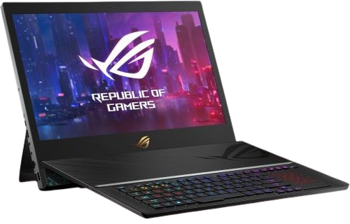
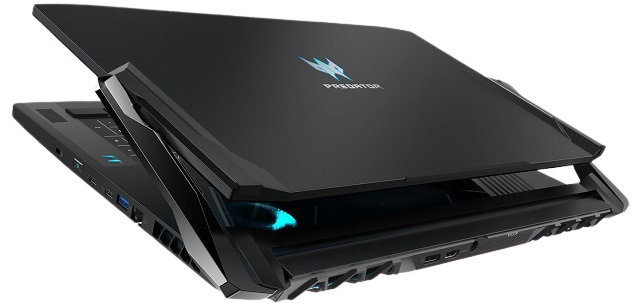
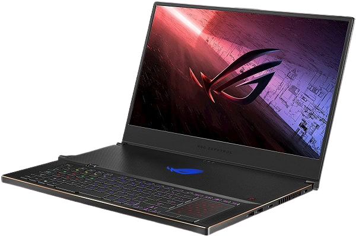
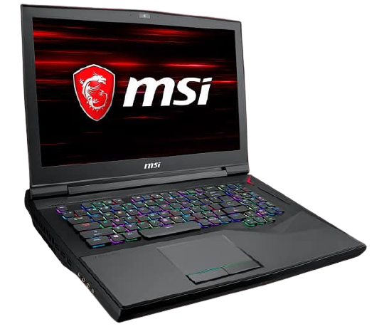
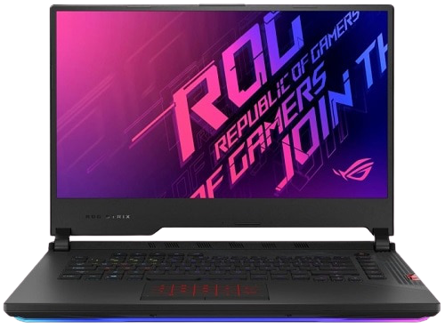
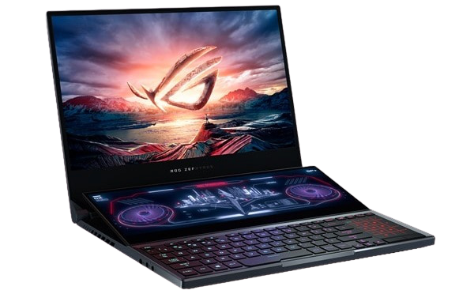

LAPTOP TERBAIK 2020
Laptop gaming adalah tipe laptop yang ditujukan khusus untuk bermain game. Laptop gaming punya
spesifikasi tinggi yang membuatnya berbeda kelas dibanding laptop 4 jutaan atau laptop 5 jutaan.
Umumnya, laptop gaming mengandalkan dapur pacu kelas atas agar bisa memainkan banyak game berat
dengan lancar.
Laptop gaming, umumnya punya bentuk desain yang gahar. Bodinya tampak lebih kokoh dan lebih berat
dibanding laptop tipis atau ultrabook dan notebook. Karena desain bodi yang kokoh, spesifikasi
tinggi, wajar saja bila laptop gaming dibanderol dengan harga yang mahal.
Harga laptop gaming memang mahal. Ada banyak produk laptop gaming dengan harga tinggi, bisa sampai
puluhan bahkan mendekati ratusan juta. Karena itu, sebutan laptop gaming murah itu mengacu kepada
laptop gaming yang dibanderol pada kisaran harga 10 jutaan, harga tererendah sebuah laptop
gaming. Nah, pada kesemapatan kali ini, Carisinyal akan bahas 10 laptop gaming pilihan terbaik. Yang
ada dalam daftar ini adalah laptop gaming yang harganya tergolong mahal, bahkan ada yang sampai
puluhan juta. Apa sajakah itu? Berikut daftarnya.
Asus ROG GZ700GX-I9R81T i9-9980H (ROG Mothership)

Dengan harga di angka Rp 120 jutaan, Asus ROG Mothership adalah laptop gaming terbaik lainnya yang
kami rekomendasikan di daftar ini. Sesuai dengan harga jualnya, produk ini hadir dengan parameter
terbaik untuk pengalaman bermain game terbaik pula.
Sebagai produk kelas atas, Asus ROG Mothership hadir dengan spesifikasi yang sulit dibayangkan oleh
sebagian orang. Dapur pacunya sangat bertenaga dengan dukungan prosesor Intel Core i9 9980HK yang
memiliki delapan inti dan dua belas thread dan pengolah grafis yang juga sangat powerful, yakni
NVIDIA GeForce RTX2080 8GB.
Prosesor tersebut memiliki kecepatan yang sangat tinggi, mencapai angka 5 GHz. Disandingkan dengan
RAM 64 GB dan penyimpanan SSD 1,5 TB (3 x 512 GB), performa laptop dengan layar IPS 4K ini sudah
pasti sangat handal dan siap melibas game-game modern di berbagai pengaturan.
Asus ROG Mothership bukan hanya tentang teknologi, tetapi juga inovasi. Asus membekalinya dengan
berbagai fitur yang sangat banyak, yang meliputi berbagai aspek penting untuk pengalaman bermain
game yang sangat luar biasa.
Acer Predator Triton 900 i9-9980HK

Solusi untuk merasakan pengalaman bermain game yang hebat juga datang dari Acer Predator Triton 900.
Laptop yang satu ini bisa Anda dapatkan di bawah Rp 100 juta, tepatnya di kisaran Rp 70-80 jutaan.
Salah satu fitur unggulan yang ditawarkan oleh laptop gaming yang satu ini adalah monitor yang dapat
disesuaikan. Hal itu memudahkan Anda untuk menentukan sudut pandang saat bermain game. Hasilnya Anda
dapat menikmati empat mode monitor yang berbeda, yaitu Notebook, Ezel, Display, dan Stand.
Di bagian dapur pacu, Acer Predator Triton 900 hadir dengan prosesor Intel Core i9-9980HK yang
performanya sudah tidak perlu diragukan. Laptop ini juga siap memberi Anda pengalaman bermain game
yang kaya berkat dukungan kartu grafis berkelas NVIDIA® GeForce® RTX 2080 with 8 GB GDDR6.
Di bagian memori, Acer menyematkan RAM sebesar 32 GB (2 x 16 GB) dan penyimpanan SSD 1 TB (2 x 512
GB). Sejumlah fitur keren juga tentunya tidak lupa disematkan pada produk ini, menjadikannya sebagai
salah satu laptop gaming terbaik yang layak dipilih.
Asus ROG Zephyrus S17

Asus ROG Zephyrus S17 diklaim sebagai laptop gaming 17 inci paling kompak di pasaran. Bagaimana
tidak, bodi yang terbuat magnesium alloy-cukup kuat untuk bertahan di kehidupan sehari-hari-hanya
memiliki ketebalan 1,87 cm, dengan bobot sekitar 2,6 kg. Bagi gamer yang mobilitasnya cukup tinggi,
laptop ini jelas pilihan yang bagus.
Tampilan adalah salah satu bagian paling menonjol dari Asus ROG Zephyrus S17. Sejauh ini belum
banyak laptop yang menawarkan tampilan 300Hz yang mampu menawarkan pengalaman gameplay yang sangat
mulus dengan kecepatan luar biasa. Jika tampilan 144Hz saja sudah bagus, apalagi yang 300Hz.
Layarnya yang berkualitas tinggi diimbangi dengan performa unggulan yang siap menangani beban kerja
yang berat dengan mulus. Tidak hanya untuk bermain game saja, performanya jelas dapat diandalkan
oleh para pembuat konten maupun pengguna profesional lainnya.
Desain yang elegan selalu identik dengan laptop Asus, termasuk Asus ROG Zephyrus S17 yang tampak
berkelas, gagah, stylish, dan futuristik. Tepian layarnya yang tipis membuat tampilannya terasa
lebih luas dan leluasa ketika digunakan. Ini memang sudah seharusnya, karena sebagai laptop gaming
portabel, Asus ROG Zephyrus S17 harus mampu menarik perhatian.
Meskipun ramping, Asus ROG Zephyrus S17 tetap menawarkan sistem pendinginan yang mumpuni, bahkan
dinilai bagus oleh Notebookcheck. Dengan demikian, kinerja laptop ini dapat dipertahankan dalam
jangka waktu yang lama.
MSI GT75-9SG Titan i9-9980HK

Bagi yang ingin lebih puas merasakan konten permainan secara visual, MSI GT75-9SG Titan i9-9980HK
bisa menjadi pilihan yang tepat. Pasalnya laptop ini menampilkan layar IPS UDH 17,3 inci yang jelas
dan cerah serta menawarkan keleluasaan yang lebih saat bermain maupun melakukan produktivitas.
Selain layar yang besar, laptop ini juga hadir dengan kapasitas RAM yang besar pula. Model seharga
90 jutaan ini memiliki RAM 64 GB dan masih dapat ditingkatkan hingga 128 GB. Dikombinasikan dengan
kinerja yang kuat dengan prosesor Core i9 dan grafis Nvidia RTX, laptop ini siap menangani berbagai
pekerjaan berat dengan baik.
Bagian lain yang diunggulkan dari laptop ini adalah papan ketik mekanis yang hebat dan nyaman.
Dengan pengaturan yang sangat bagus, papan ketiknya dinilai mampu meningkatkan kemampuan mengetik
pengguna karena tombol-tombolnya tidak hanya nyaman, tapi juga elastis, kuat dan cepat.
Dibalik bodinya yang tebal dan berat ada banyak fitur-fitur unggulan untuk pengalaman bermain yang
mengesankan. Salah satunya adalah empat speaker yang diposisikan di sepanjang bibir depan laptop.
Subwoofer yang dipasang di bagian bawah speaker tersebut mampu mengeluarkan gelombang audio yang
kaya, jernih, dan keras, membuatnya salah satu yang paling unggul di kelasnya.
Beberapa fitur unggulan lain yang ditawarkan MSI GT75-9SG Titan i9-9980HK adalah sepasang kipas
ganda dengan belasan heat pipe yang efektif serta webcam Full HD di mana tidak banyak brand yang
menawarkan webcam serupa dalam lini laptop gaming mereka.
Asus ROG Strix SCAR G732LXS i9-10980HK

Salah satu bagian yang paling diunggulkan dari Asus ROG Strix SCAR G732LXS i9-10980HK adalah
tampilan 300Hz-nya yang super cepat. Meskipun sebenarnya tampilan 144Hz saja sudah cukup untuk
kebanyakan gamer, namun ini menjadi nilai tambah tersendiri bagi laptop seharga 70 jutaan ini.
Laptop Asus biasanya identik dengan desain yang stylish dan elegan serta kualitas bangunan yang
bagus. Sama halnya dengan Asus ROG Strix SCAR G732LXS ini. Untuk laptop seukurannya bodinya termasuk
ringkas. Hasilnya laptop ini tidak hanya cocok bagi gamer saja, tapi juga bagi para pekerja kreatif
dan pengguna profesional yang lain.
Bagian lain yang diunggulkan dari laptop ini adalah daya tahan baterainya juga tergolong bagus.
Dalam uji lab WLAN yang dilakukan oleh Notebookcheck, baterai Asus ROG Strix SCAR G732LXS mampu
bertahan sekitar 6 jam pada luminositas sekitar 150 cd/m².
Untuk performa, Asus ROG Strix SCAR G732LXS disebut-sebut sebagai salah satu laptop paling ngebut di
tahun 2020. Kombinasi antara prosesor dan grafis yang powerful dan RAM yang besar membuat performa
gamingnya sangat memadai. Tentu saja performanya hebat untuk para pembuat konten, bahkan konten 3D
sekalipun.
Secara keseluruhan laptop ini sangat hebat di kelasnya dengan LED-LED RGB yang mengesankan di
sekelilingnya. Namun, absennya beberapa bagian cukup disayangkan dari laptop ini. Salah satunya
adalah tidak adanya webcam yang mungkin dibutuhkan oleh beberapa pengguna.
Asus ROG Zephyrus Duo i9-10980HK

Dengan harga hampir 100 juta rupiah, Asus ROG Zephyrus Duo i9-10980HK adalah laptop gaming layar
ganda pertama di dunia dengan layar 4K UHD. Layar keduanya berupa ROG ScreenPad Plus yang inovatif
untuk pengalaman bermain game yang luar biasa dan melakukan pekerjaan kreatif yang mengesankan.
Keunggulan lain yang ditawarkan laptop ini adalah desain yang portabel untuk laptop sejenisnya.
Dengan bobot sekitar 2,4 kg, ketebalan 2 cm serta baterai berkapasitas 90Wh membuat penggunanya bisa
tetap bermain dan tetap produktif di mana saja.
Untuk membantu menyajikan performa terbaik dari prosesor dan kartu grafis hebat yang digunakannya,
Asus ROG Zephyrus Duo i9-10980HK dilengkapi dengan sistem pendingin yang inovatif dengan logam cair
dan desain termal yang luar biasa.
Tampilannya laptop ini sangat mengagumkan, dengan layar utama 4K UHD yang berkualitas tinggi.
Sementara itu, layar keduanya yang juga beresolusi tinggi dan sudah touchscreen sangat membantu
pengguna dalam memaksimalkan kreativitas mereka saat bermain dan melakukan pekerjaan lainnya.
Secara keseluruhan, dengan segala fitur dan teknologi unggulan yang ditawarkannya, laptop ini cocok
bagi para gamer, konten kreator maupun pengguna profesional lainnya yang menginginkan perangkat
laptop yang powerful, portabel, dan dapat diandalkan dengan baik untuk menunjang pekerjaan mereka.